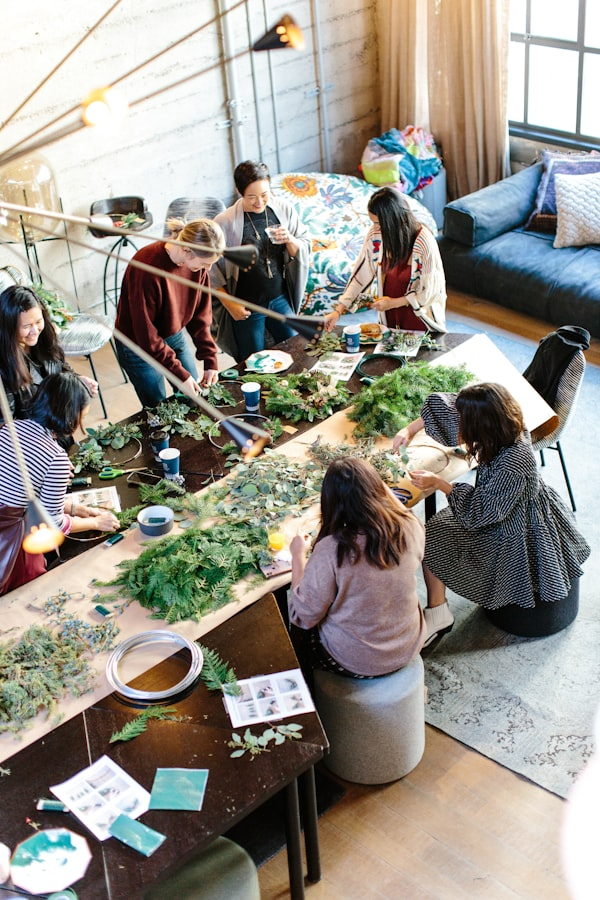
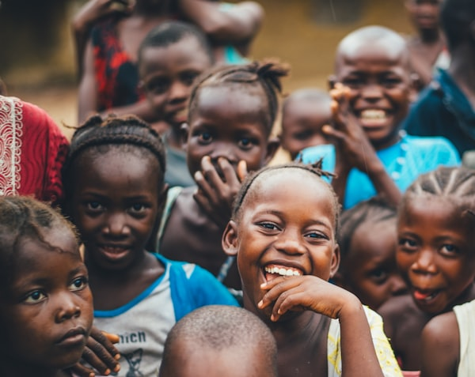

What Is Planetary Health and Why Should Youth Care?
An introduction to the concept of planetary health — the relationship between human well-being and the natural systems we depend on — and why young people are at the center of the solution.
Insights, stories, and knowledge from our global community
An introduction to the concept of planetary health — the relationship between human well-being and the natural systems we depend on — and why young people are at the center of the solution.

Climate change isn't just an environmental crisis — it's a mental health crisis. Here's how eco-anxiety manifests in youth and what we can do to support each other.
A step-by-step guide from our members who have successfully launched clubs in high schools and universities around the world.

Reflections from our delegation at the United Nations ECOSOC Youth Forum in New York — what we learned, who we met, and what comes next.
How sustainable urban farming connects food systems, community health, and environmental action — and how youth are leading the way.

Highlighting the essential role of young women in driving planetary health forward — from local clubs to global policy spaces.
We welcome stories, research summaries, opinion pieces, and project updates from our members worldwide.